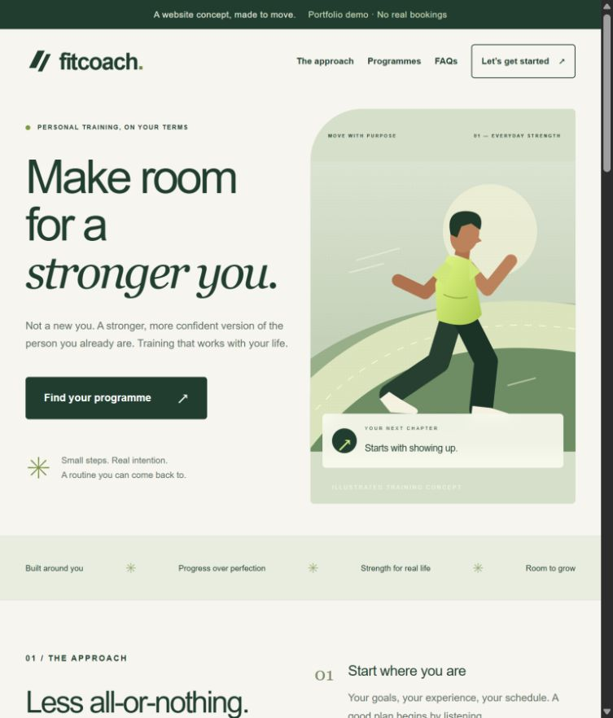

01 / LANDING PAGE
FitCoach
A focused fitness coaching landing page with bilingual content, pricing, FAQ and a validated lead form that keeps submissions in the browser.
- Responsive from 360px to desktop
- Accessible form and clear states
- Original visual direction